Below are publications and PDF reprints from Brian Folt and the Wildlife Decision-Support Shop. Peer-reviewed publications are listed numerically and ordered by year.
In preparation (draft available upon request)
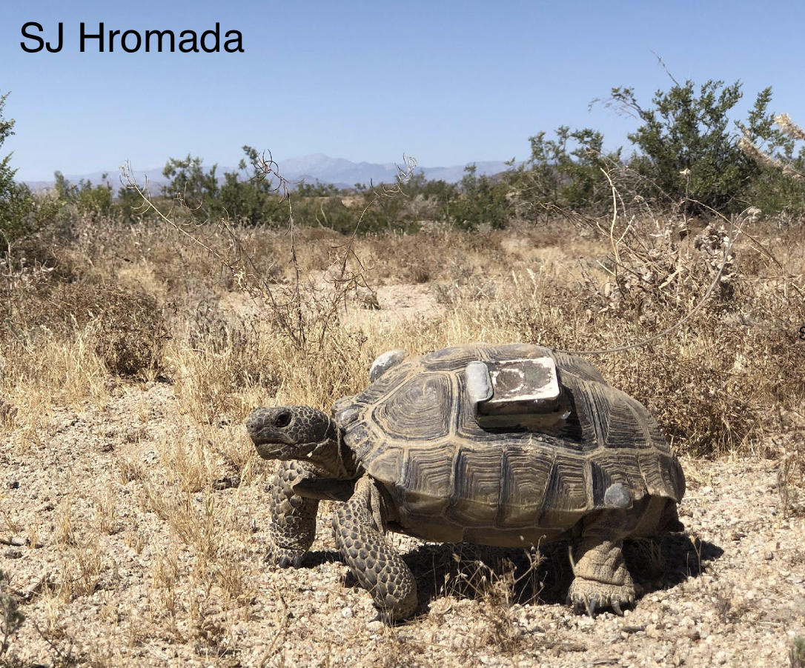
[i] K Grimm, B Folt, A Collins, M Standen, M Spangler, B Dickson. Applying knowledge co-production to identify Mojave desert tortoise stressors across time, space, and agency missions. Under review.
[ii] SJ Hromada, B Folt, A Collins, J Dougherty, LJ Allison, KK Drake, TC Esque, J Freilich, E Hunter, JE Lovich, AM McLuckie, CI Mitchell, KE Nussear, K Shoemaker, MS Vamstad, AG Vandergast, MA Walden, BG Dickson. An integrated survival model improves inference about historical patterns of survival in the Mojave desert tortoise. Under review.
[iii] B Folt, M Crabb, KA Schoenecker. Management and population density influence wild horse population growth in the western United States. In preparation.
2025
[29] A Robillard, M Standen, N Giebink, M Spangler, AC Collins, B Folt, A Maguire, B Dickson. In press. Application of computer vision for off-highway vehicle route detection in threatened Mojave desert tortoise habitat. Remote Sensing.
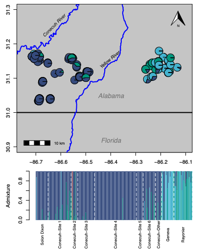
2024
[28] B Folt, M Marshall, JA Emmanuel, M Dziadzio, J Cooke, L Mena, M Hinderlichter, S Hoffman, N Rankin, J Tupy, CP McGowan. 2024. Strengths and opportunities in gopher tortoise population modeling: Reply to Loope et al. Global Ecology and Conservation, e03093. PDF DOI
[27] C Guyer, JM Goessling, B Folt. Annual and lifetime home ranges reveal movement patterns within and among local populations of gopher tortoises. Chelonian Conservation and Biology 23(1):81–91. PDF DOI
[26] AR Krohn, B Folt, JJ Apodaca, C Guyer, J Goessling. 2024. Using genomic data to estimate population structure and health for gopher tortoises. Conservation Genetics 25:755–770. PDF DOI
2023
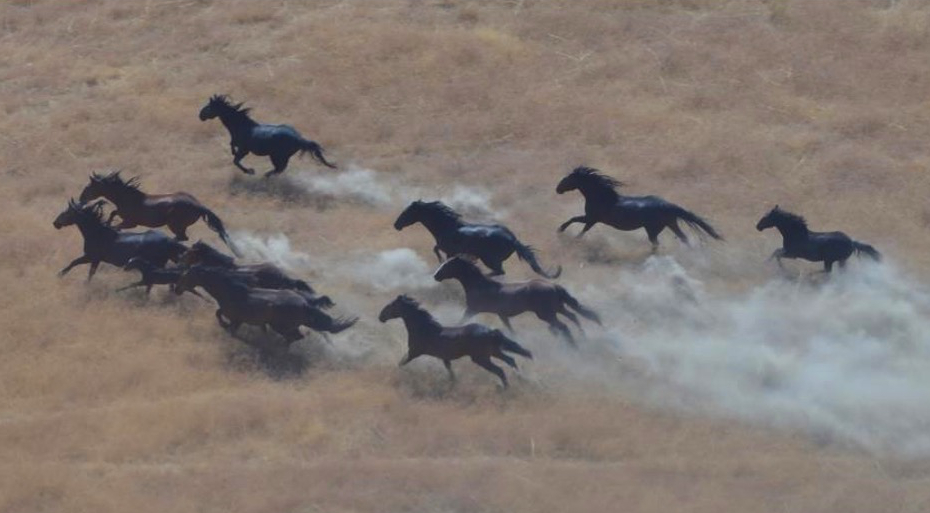
[25] B Folt, KA Schoenecker, LS Ekernas, DR Edmunds, M Hannon. 2023. PopEquus: a predictive modeling tool to support management decisions for free-roaming horse populations. Ecosphere e4632. PDF - DOI - Software - Application
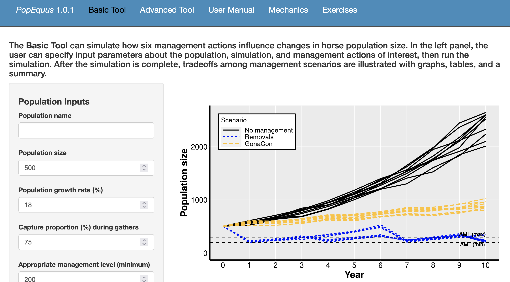
[Software] B Folt, LS Ekernas, DR Edmunds, M Hannon, KA Schoenecker. 2023. PopEquus: A Predictive Modeling Tool to Support Management Decisions for Free-roaming Horse Populations: U.S. Geological Survey software release, https://doi.org/10.5066/P9NMRQDG. Web app. Press Releases: BLM, USGS
2022
[24] B Folt, K Schoenecker, LS Ekernas. 2022. Multi-objective modeling as a decision-support tool for free-roaming horse management. Human-Wildlife Interactions. PDF Software
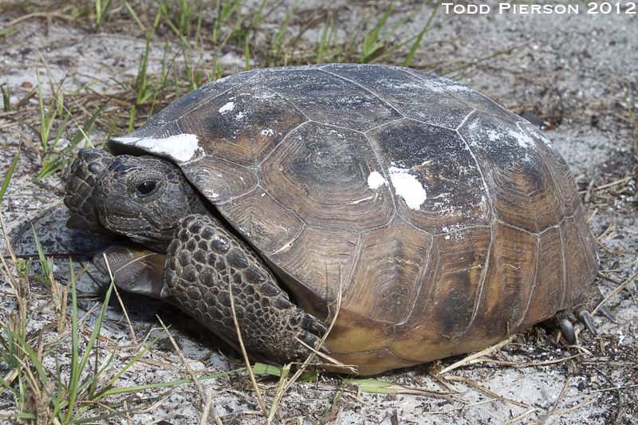
[23] B Folt, M Marshall, JA Emmanuel, M Dziadzio, J Cooke, L Mena, M Hinderlichter, S Hoffman, N Rankin, J Tupy, CP McGowan. 2022. Using predictions from multiple anthropogenic threats to estimate future population persistence of an imperiled species. Global Ecology and Conservation 36: e02143. PDF DOI
2021
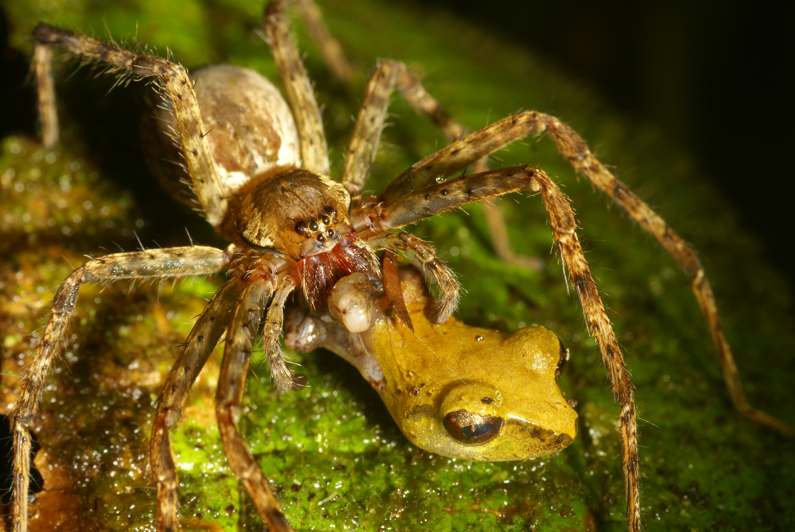
[22] AJ Lawson, B Folt, AM Tucker, F Erickson, CP McGowan. 2021. Decision context as a necessary component of population viability analysis appraisal. Conservation Biology 35(5): 1683–1685. PDF DOI
[21] B Folt, C Guyer. 2021. Habitat-dependent effects of predators on prey frogs in a Neotropical wet forest. Journal of Tropical Ecology 37(5): 214-221. PDF DOI
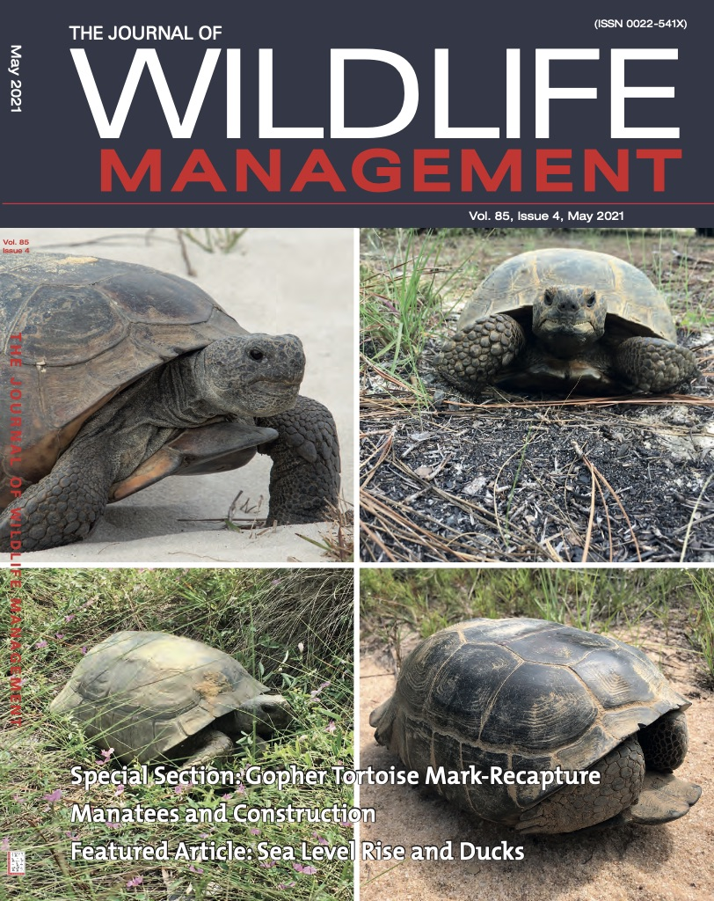
[20] T Mitchell, B Folt, J Hall. 2021. Dumpsters and other anthropogenic structures as habitat for invasive African rock agama lizards in Florida. Biological Invasions 23: 2689–2693. PDF DOI
[19] B Folt, J Goessling, AM Tucker, C Guyer, S Hermann, E Shelton-Nix, CP McGowan. 2021. Contrasting patterns of demography and population viability among gopher tortoise populations in Alabama. Journal of Wildlife Management 85(4): 617–630. PDF DOI
2020
[18] B Folt. 2020. Population demography of Rhinoclemmys funerea (Black River Turtle) at a protected forest reserve in Costa Rica. Herpetological Conservation and Biology 15(3):611–619. PDF DOI
[17] R Etzel^, M Cornish^, MS Kifer^, L Nuñez, G Valladao^, B Folt. 2020. Subterranean advertisement and duet calling behavior in Ptychohyla legleri (Legler’s Stream Frog). Alytes 37(3–4): 57–61. PDF Data
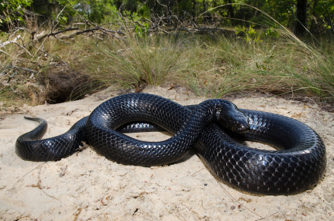
[16] B Folt, CP McGowan, DA Steen, S Piccolomini, M Hoffman, J Godwin, C Guyer. 2020. Modeling strategies and evaluating success during repatriations of elusive and endangered species. Animal Conservation 23: 273–285. PDF DOI Code
2019
[15] C Guyer, B Folt, M Hoffman, J Bauder, D Stevenson, S Goetz, M Miller, J Godwin. 2019. Patterns of head shape and scutellation in Drymarchon couperi (Squamata: Colubridae) reveal a single morphological species. Zootaxa 4695(2): 168–174. PDF DOI
[14] C Guyer, S Goetz, B Folt, K Joyce^ & M Hayes. 2019. Variation in head shape and color of slimy salamanders (Plethodon glutinosus complex) across the Gulf Coastal Plain, USA. Copeia 107(4): 694–700. PDF DOI
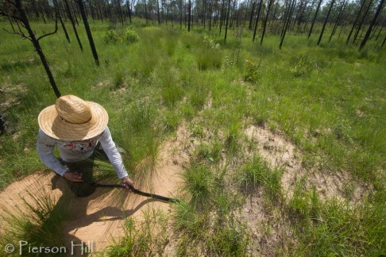
[13] B Folt, J Bauder, S Spear, D Stevenson, M Hoffman, J Oaks, PL Wood Jr, C Jenkins, D Steen, C Guyer. 2019. Taxonomic and conservation implications of population genetic admixture, mito-nuclear discordance, and male-biased dispersal of a large endangered snake, Drymarchon couperi. PLoS ONE 14(3): e0214439. PDF DOI Data Op-ed in the Tallahassee Democrat
[12] R Hopkins^, B Folt. 2019. Screaming calls of
Leptodactylus savagei (Smoky Jungle Frog) function as an alarm
for conspecifics. Journal of Herpetology 53(2): 154–157. PDF DOI Data

2018
[11] N Rivera^, B Folt. 2018. Community assembly of glass frogs (Centrolenidae) in a Neotropical wet forest: a test of the river zonation hypothesis. Journal of Tropical Ecology 34: 108–120. PDF DOI
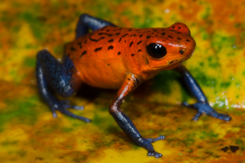 [10] B Folt, MA Donnelly, C Guyer. 2018. Spatial patterns of Oophaga pumilio in a homogeneous plantation system are consistent with conspecific attraction. Ecology and Evolution 8: 2880–2889. PDF DOI
2017
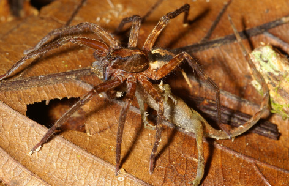 [9] B Folt, W Lapinski. 2017. New observations of frog and lizard predation by wandering and orb-weaver spiders in Costa Rica. Phyllomedusa 16: 269–277. PDF DOI
[8] JR Roberts, KM Halanych, CR Arias, B Folt, JM Goessling, SA Bullard. 2017. Emendation and new species of Hapalorhynchus Stunkard, 1922 (Digenea: Schistosomatoidea) from musk turtles (Kinosternidae: Sternotherus) in Alabama and Florida rivers. Parasitology International 66: 748–760. PDF DOI
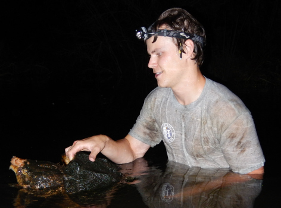
2016
[7] B Folt, JB Jensen, A Teare, D Rostal. 2016. Establishing reference demography for conservation: A case study of Macrochelys temminckii in Spring Creek, Georgia. Herpetological Monographs 30: 21–33. PDF DOI
[6] B Folt, N Garrison, C Guyer, J Rodriguez, JE Bond. 2016. Phylogeography and evolution of the Red Salamander (Pseudotriton ruber). Molecular Phylogenetics and Evolution 98: 97–110. PDF DOI 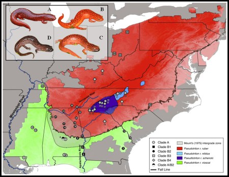
[5] JR Ennen, J Godwin, JE Lovich, BR Kreiser, B Folt, S Hazzard. 2016. Interdrainage morphological and genetic differences in the Escambia Map Turtle, Graptemys ernsti. Herpetological Conservation and Biology 11(1): 122–131. PDF/DOI
2015
[4] B Folt, C Guyer. 2015. Evaluating recent taxonomic changes for alligator snapping turtles (Testudines: Chelydridae). Zootaxa 3947(3): 447–450. PDF DOI 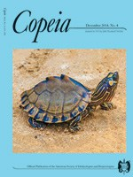
2014
[3] JC Godwin, JE Lovich, JR Ennen, B Kreiser, B Folt, C Lechowicz. 2014. Hybridization of two megacephalic map turtles (Testudines: Emydidae: Graptemys) in the Choctawhatchee River drainage of Alabama and Florida. Copeia 2014(4): 725–742. PDF DOI
2013
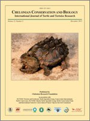 [2] B Folt, JC Godwin. 2013. Status of the Alligator Snapping Turtle (Macrochelys temminckii) in south Alabama with comments on its distribution. Chelonian Conservation and Biology 12(2): 211–217. PDF DOI
[1] B Folt, KE Reider. 2013. Leaf-litter herpetofaunal richness, abundance, and community assembly in mono-dominant plantations and primary forest of northeastern Costa Rica. Biodiversity and Conservation 22(9): 2057–2070. PDF DOI
Book chapters
[4] RGJ Rhodin, BY Villegas-Raygoza, B Folt, RA Mittermaier. 2024. IUCN Red List Assessment for Kinosternon angustipons. In press.
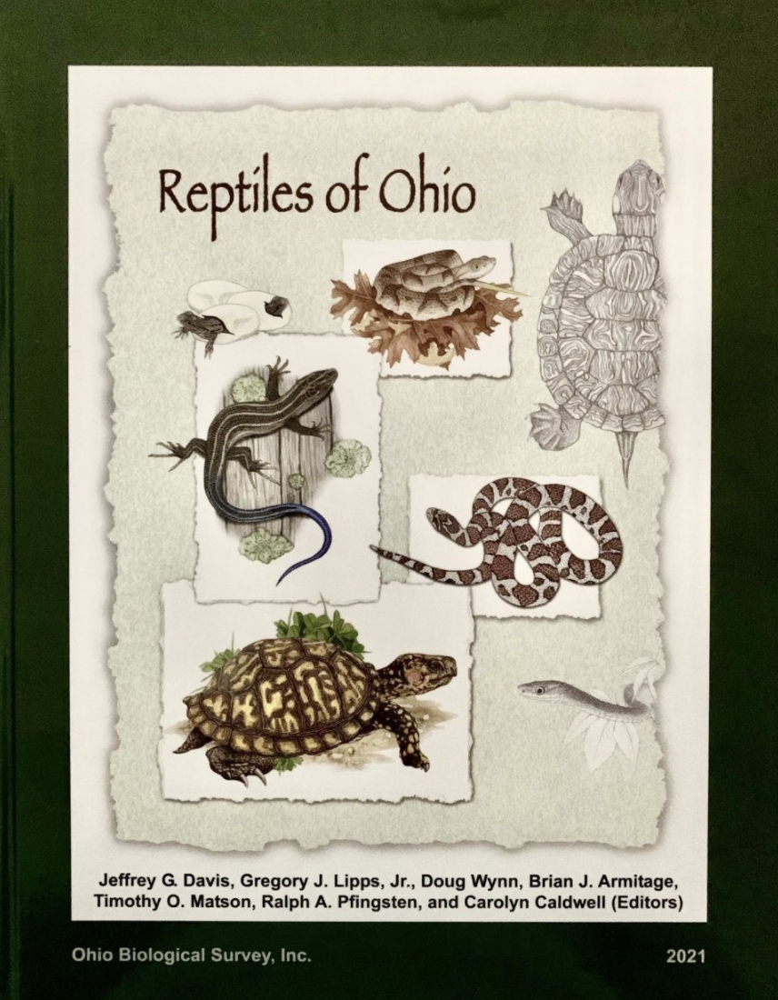
[3] B Folt, PP van Dijk, A Rhodin, R Such. 2024 IUCN Red List Assessment for Rhinoclemmys funerea. In press.
[2] B Folt. 2021. Eastern Fence Lizard Sceloporus undulatus. Pp. 335–344 in JG Davis, GJ Lipps Jr, D Wynn, BK Armitage, TO Matson, RA Pfingsten, C Caldwell (eds). Reptiles of Ohio. Ohio Biological Survey Bulletin New Series 20(1), 1112 pg.
[1] B Folt, JG Davis. 2013. Blanchard’s Cricket Frog Acris blanchardi (Harper 1947). In: R Pfingsten, JG Davis, TO Matson, G Lipps Jr., D Wynn, BJ Armitage (eds) Amphibians of Ohio. Ohio Biological Survey Bulletin New Series 17(1).
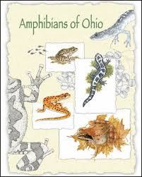
Natural history papers
C Sanspree, CM Murray, B Folt. 2016. Macrochelys temminckii (Alligator Snapping Turtle): predation. Herpetological Review 47(1): 124–5. PDF
B Folt, D Laurencio, JM Goessling, RD Birkhead, J Stiles, S Stiles, S Belford, AT Harris. 2015. One hundred two new county records for amphibians and reptiles in Alabama. Herpetological Review 46(4): 591–594. PDF
C Ganong, B Folt. 2015. Pristimantis cerasinus (Clay-colored Rain Frog): mortality. Herpetological Review 46(3): 416.
TW Pierson^, T Stratmann, EC White, AG Clause, C Carter, MW Herr, AJ Jenkins, H Vogel, M Knoerr, B Folt. 2014. New county records of amphibians and reptiles resulting from a bioblitz competition in north-central Georgia, USA. Herpetological Review 45(2): 296–297. PDF
SC Sterrett, JB Jensen, B Folt. 2014. Graptemys barbouri (Barbour’s Map Turtle): basking height. Herpetological Review 45(2): 314–31
B Folt, T Pierson^, SM Goetz, J Goessling, D Laurencio, D Thompson^, SP Graham. 2013. Amphibians and reptiles of Jasper County, Mississippi with comments on the potentially extinct Bay Springs Salamander (Plethodon ainsworthi). Herpetological Review 44(2): 283–286. PDF
B Folt, D Laurencio. 2013. Agkistrodon contortrix (Copperhead): diet. Herpetological Review 44(3): 517.
B Folt, JR Folt, CR Brune. 2012. New county records for Ohio amphibians and reptiles. Herpetological Review 43(4): 624–625.
B Folt. 2012. Lithobates heckscheri (River Frog): geographic distribution. Herpetological Review 43(1): 99.
Outreach publications
B Folt. 2019. Op-ed: “Indigo Snake Releases are Guided by Strong Science and Conservation Ethic.” The Tallahassee Democrat. Link
B Folt. 2014. Alligator Snapping Turtles: Ecology and Mythology in Alabama. Alabama Wildlife Magazine, July 2014. 44 pp. Article featured with cover photograph.